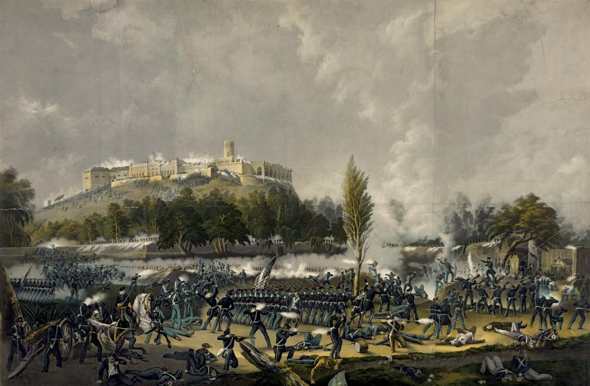
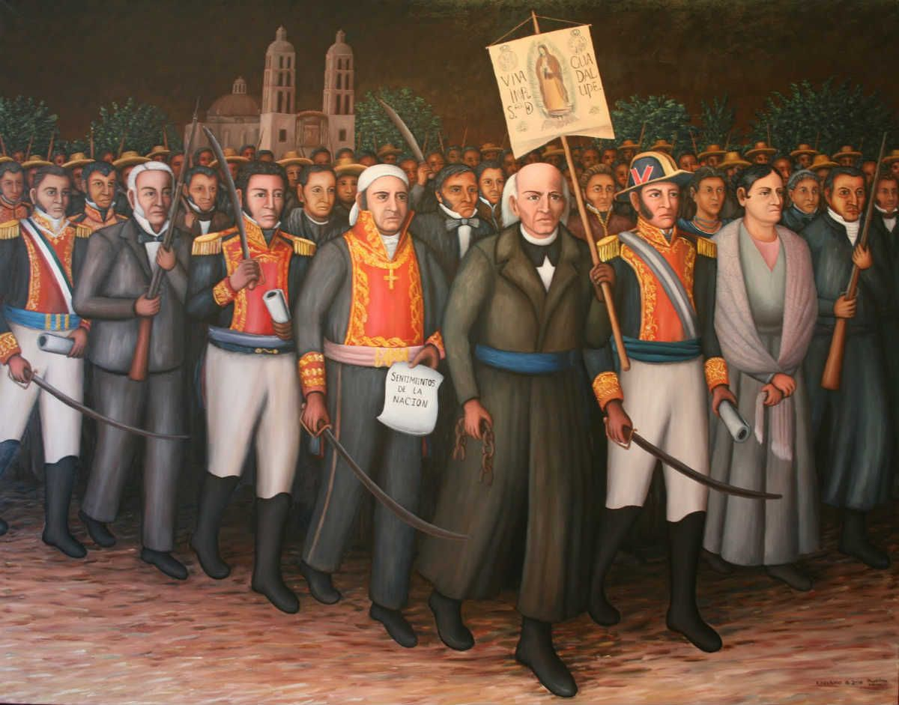
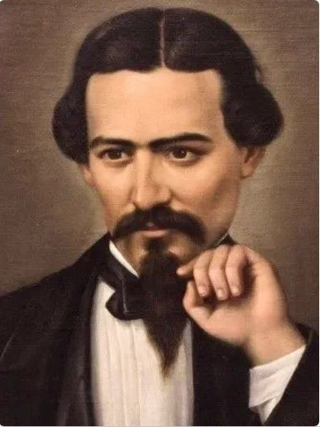
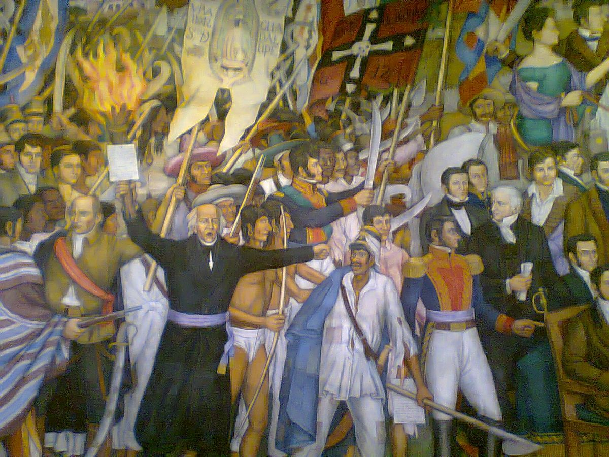
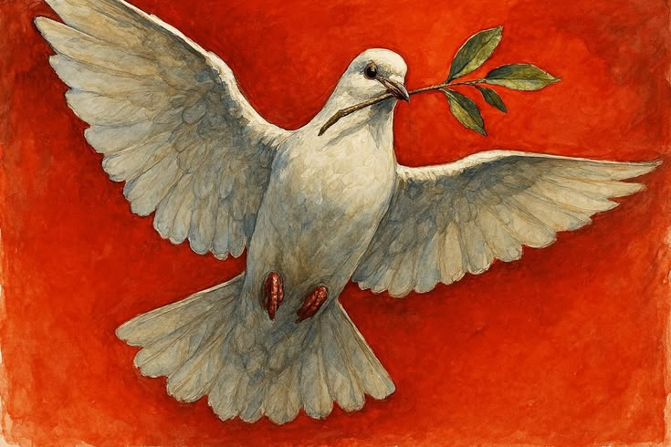
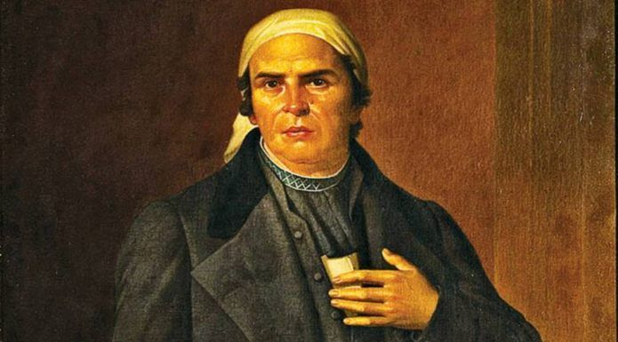

13 de septiembre de 1847: Aniversario del sacrificio de los Niños Héroes de Chapultepec.
Se conmemora en México la Batalla de Chapultepec de 1847, donde seis cadetes del Colegio Militar —conocidos como los Niños Héroes— murieron defendiendo el castillo contra la invasión del ejército de Estados Unidos.


Se celebra el Grito de Independencia, la fiesta patria más importante de México. Por la noche, el Presidente y las autoridades locales replican el llamado que hizo el cura Miguel Hidalgo en 1810 en Dolores, Hidalgo, para iniciar la lucha por la libertad contra el dominio español.
15 de septiembre de 1810: Conmemoración del Grito de Independencia.
15 de septiembre de 1854: Se interpretó por primera vez el "Himno Nacional Mexicano".
Se interpretó por primera vez de forma pública el Himno Nacional Mexicano. El estreno oficial ocurrió en el Teatro Santa Anna, con la letra de Francisco González Bocanegra y la música de Jaime Nunó.


El 16 de septiembre de 1810 inició la Guerra de Independencia de México. Durante la madrugada, el cura Miguel Hidalgo y Costilla tocó la campana de la iglesia de Dolores para convocar al pueblo a levantarse en armas contra el dominio español.
16 de septiembre de 1810: Aniversario del inicio de la Independencia de México.
21 de septiembre: Se conmemora el Día Internacional de la Paz
El 21 de septiembre se conmemora el Día Internacional de la Paz, establecido por la ONU para fortalecer los ideales de no violencia y alto al fuego en todo el mundo.


Se conmemora el natalicio de José María Morelos y Pavón (1765), uno de los líderes y estrategas más importantes de la Independencia de México.
30 de septiembre de 1765: Aniversario del nacimiento de José María Morelos.